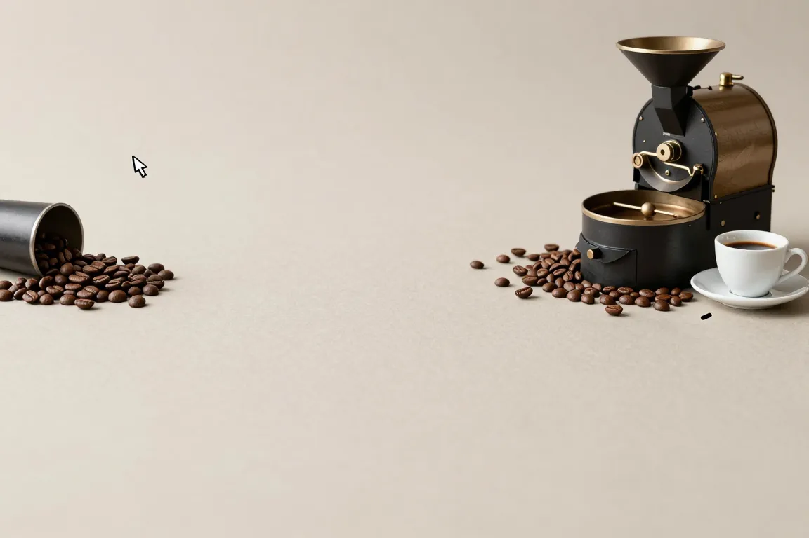

веб · 2022–now · также: Разговорный интерфейс, Интерфейс чата с LLM, Интерфейс с приоритетом запроса
Одна центрированная колонка, одно большое поле ввода внизу, потоковый текст, чипы с подсказками и почти никакой обвязки. Пришёл с ChatGPT в 2022 году и делает язык главным органом управления.

Главная идея
Интерфейс — это разговор: одно поле, в которое говорят, а всё остальное появляется в ответе.
Принципы дизайна
Центрируйте одну колонку 680–768px; берите строку 60–75 знаков и текст 16–17px с интерлиньяжем 1,6.
Закрепите одно поле ввода внизу: высота 56–120px, растущая до 200px, радиус 16–28px, с кнопкой отправки 32–40px внутри.
Отмечайте реплики пользователя тонированным пузырём (радиус 18px, макс. ширина 80%), а реплики ассистента оставляйте простым текстом без пузыря.
Выводите текст по словам потоком, 20–60 слов в секунду, и показывайте 12-пиксельный пульсирующий курсор или точку, пока идёт поток.
Предлагайте 3–4 чипа с подсказками (высота 36–44px, радиус 999px) в пустом состоянии и 2–3 продолжения после ответа.
Скрывайте боковую панель по умолчанию на экранах уже 768px и держите её шириной 260px на десктопе, по строке 36px на каждый чат.
Показывайте источники, инструменты и код сворачиваемыми блоками с рамкой 1px и радиусом 12px; блоки кода набирайте моноширинным шрифтом 13px.
Антипаттерны
Дашборды из плиток и множество меню рядом с чатом
Тяжёлые пузыри вокруг каждого ответа ассистента
Декоративные фоны за текстом
Многоколоночные макеты для основного ответа
Плотные панели инструментов над полем ввода
Индикаторы набора, имитирующие человека
Скрытое поле ввода, которое нужно открывать кликом